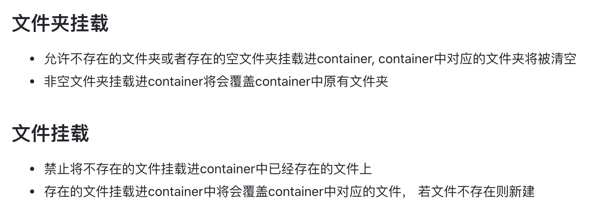
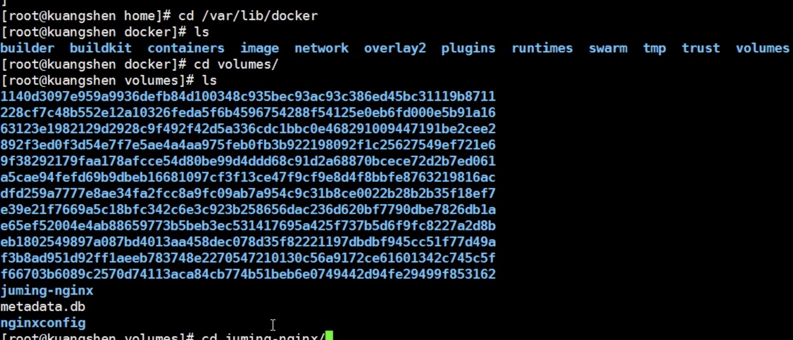
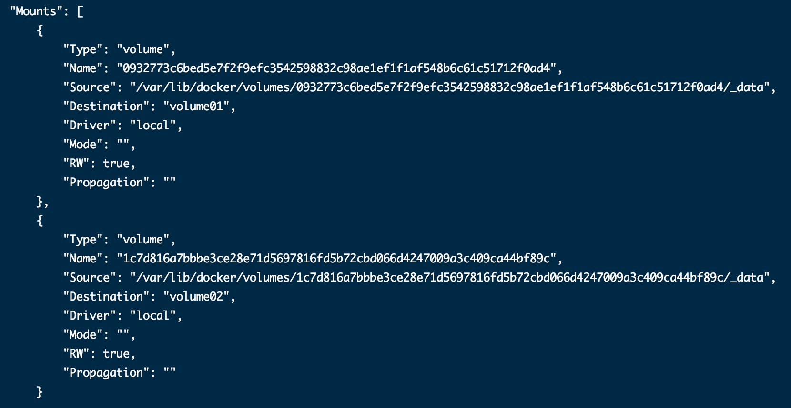
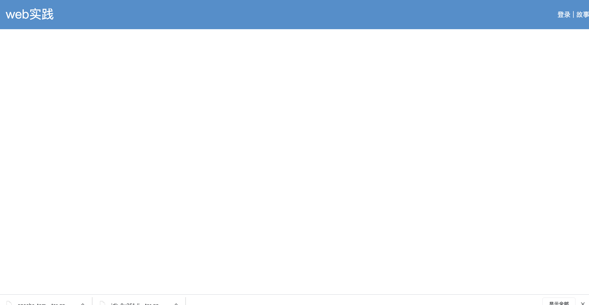

1.容器数据卷
容器的持久化和同步操作；容器和宿主机之间数据共享
docker -it -v /home/ceshi:/home centos /bin/bash 双向绑定
a.测试：持久化mysql
注意 
因为是宿主机映射容器，先将要挂载的文件从或文件夹从容器中拷贝到宿主机，再进行挂载
1.1 指定路径挂载
docker run -d -p 3306:3306 -v /data/mysql/conf:/etc/mysql/conf.d -v /data/mysql/data:/var/lib/mysql -e MYSQL_ROOT_PASSWORD=123456 --name mysql02 mysql
1.2 具名挂载
docker run -d -P --name nginx02 -v juming:/etc/nginx nginx
1.3 匿名挂载
docker run -d -P --name nginx03 -v /etc/nginx
docker volume ls //查看所有卷的情况
docker volume inspect juming //查看这个卷
docker run -d -P --name nginx02 -v juming:/etc/nginx:ro nginx //只读权限 只能在宿主机修改文件
docker run -d -P --name nginx02 -v juming:/etc/nginx:rw nginx
卷的位置 
2.数据卷容器
实现容器之间的数据挂载 互为主从
docker run -it --name docker01 centos_xt:1.0.0 /bin/bash //启动一个容器
docker run -it --name docker02 --volumes-from docker01 centos_xt:1.0.0 /bin/bash //启动另一个容器，数据卷挂载在容器01的数据卷上
3.Dockerfile
就是用来构建docker镜像的构建文件！
touch dockerfile //创建文件，名字最好是dockerfile
FROM centos
VOLUME ["volume01","volume02"]
CMD echo "----end----"
CMD /bin/bash
docker build -f dockerfile -t centos_xt . //别拉下这个.
docker inspect 容器id
匿名挂载 
指令
FROM # 基础镜像 一切从这里构建 centos
MAINTAINER # 镜像的作者 姓名+邮箱
RUN # 镜像构建的时候需要运行的命令
ADD # 步骤 添加内容 如 tomcat镜像
WORKDIR # 镜像的工作目录
VOLUME # 挂载的目录
EXPOSE # 保留端口配置
CMD # 指定容器启动的时候运行的命令，只有最后一个生效，会被代替
ENTRYPOINT # 指定容器启动的时候运行的命令，可以追加
ONBUILD # 当构建一个被继承的dockfile时，就会运行ONBUILD的指令
COPY # 相当于 ADD，将文件拷贝到镜像中
ENV # 构建的时候设置环境变量
自己打包一个centos镜像，完善命令
FROM centos
MAINTAINER xtuao<guangyan0011@gmail.com>
ENV MYPATH /usr/local
WORKDIR $MYPATH
RUN yum -y install vim
RUN yum -y install net-tools
EXPOSE 80
CMD echo $MYPATH
CMD echo "----end----"
CMD /bin/bash
docker history 镜像id //查看镜像的构建过程
通过dockerfile构建自己的镜像
1.导出镜像：在根目录下
docker save <myimage>:<tag> | gzip > <myimage>_<tag>.tar.gz
2.导入镜像：
gunzip -c <myimage>_<tag>.tar.gz | docker load
1.先准备jdk 和 tomcat的压缩包，去各自的官网去下载
2.编写dockerfile
FROM centos
MAINTAINER xutao<guangyan0011@gmail.cm>
ADD jdk-8u251-linux-x64.tar.gz /usr/local/
ADD apache-tomcat-9.0.37.tar.gz /usr/local/
RUN yum -y install vim
ENV MYPATH /usr/local
WORKDIR $MYPATH
ENV JAVA_HOME /usr/local/jdk1.8.0_251
ENV CLASSPATH $JAVA_HOME/lib/dt.jar:$JAVA_HOME/lib/tools.jar
ENV CATALINA_HOME /usr/local/apache-tomcat-9.0.37
ENV CATALINA_BASH /usr/local/apache-tomcat-9.0.37
ENV PATH $PATH:$JAVA_HOME/bin:$CATALINA_HOME/lib:$CATALINA_HOME/bin
EXPOSE 8080
CMD /usr/local/apache-tomcat-9.0.37/bin/startup.sh && tail -F /usr/local/apache-tomcat-9.0.37/bin/logs/catalina.out
3.构建
docker build -f dockerfile -t mydocker .
4.启动
docker run -d -p 3304:8080 --name mydocker02 -v /data/mydocker/test:/usr/local/apache-tomcat-9.0.37/webapps/test -v /data/mydocker/logs:/usr/local/apache-tomcat-9.0.37/logs mydocker
5.在宿主机的test文件夹下新建WEB-INF 文件夹，
新建文件web.xml
<web-app version="2.4"
xmlns="http://java.sun.com/xml/ns/j2ee"
xmlns:xsi="http://www.w3.org/2001/XMLSchema-instance"
xsi:schemaLocation="http://java.sun.com/xml/ns/j2ee
http://java.sun.com/xml/ns/j2ee/web-app_2_4.xsd">
</web-app>
新建文件index.jsp
<%@ page language="java" contentType="text/html; charset=utf-8"
pageEncoding="utf-8"%>
<!DOCTYPE html PUBLIC "-//W3C//DTD HTML 4.01 Transitional//EN" "http://www.w3.org/TR/html4/loose.dtd">
<html>
<head>
<meta http-equiv="Content-Type" content="text/html; charset=utf-8">
<title>首页</title>
<style>
*{
padding:0;
margin:0;
font-family:"微软雅黑";
}
.header{
height:72px;
background:#458fce ;
}
.header .logo{
color:#fff ;
line-height:70px;
font-size:30px;
margin-left:20px;
display:inline-block;
text-align:center;
}
a {
color: #fff ;
text-decoration: none ;
}
.header .login{
float:right;
color:#fff ;
line-height:72px;
margin-right:2px;
display:inline-block;
}
.banner{
height:380px;
overflow:hidden;
background: #ddd;
}
</style>
</head>
<body>
<div class="header">
<div class="logo">web实践</div>
<div class ="login">
<a href ="javascript:void(0)">登录</a>
<span>|</span>
<a href ="javascript:void(0)">故事</a>
</div>
</div>
</body>
</html>
效果如图 http://49.235.157.108:3304/test/ 
4.发布镜像
发布镜像到 dockerhub
docker login -u guangyan0011 //登陆
docker tag 81409d1c24c6 guangyan0011/centos-xt:1.0.0 //将镜像放到guangyan0011账户下
docker push guangyan0011/centos-xt:1.0.0 //推送
发布镜像到阿里云
在网站上创建 命名空间 和 镜像仓库
点击镜像仓库，有阿里云提示
$ sudo docker login --username=18854218403 registry.cn-hangzhou.aliyuncs.com
$ sudo docker tag [ImageId] registry.cn-hangzhou.aliyuncs.com/guangyan01/docker01:[镜像版本号]
$ sudo docker push registry.cn-hangzhou.aliyuncs.com/guangyan01/docker01:[镜像版本号]
5.docker 网络
通过 veth-pair 实现的 生成虚拟网卡 通过 docker etho0 转发
--link
docker run -d tomcat02 tomcat --link tomcat03
docker exec -it tomcato2 ping tomcat03 // 可以ping通
自定义网络
docker network ls // 查看所有的docker网络
docker network create --driver bridge --subnet 192.160.0.0/16 --gateway 192.168.0.1 mynet
docker run -d -p --name tomcat01 --net mynet tomcat
docker run -d -p --name tomcat02 --net mynet tomcat
// 这样tomcat01和tomcat02是可以相互ping通的